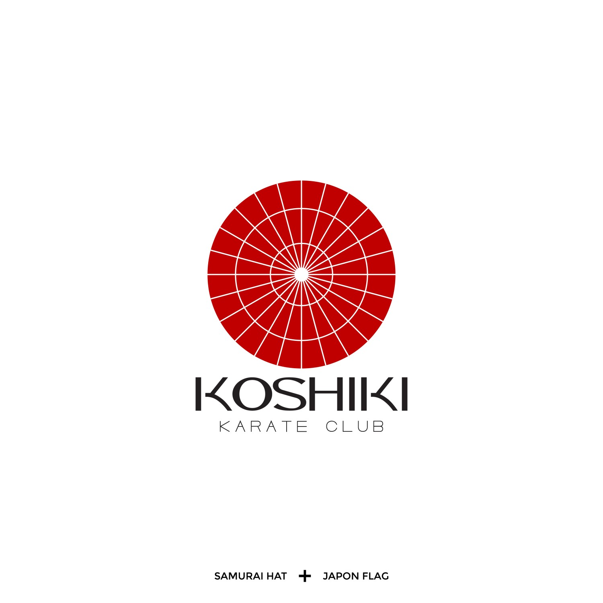

Yaradıcı düşüncəni doğru zamanla!
Salam, mən Mirzəyev Camal Qrafik dizayner! 😎
Mənə görə kreativlik çeynənmiş bir kəlmədən artıq bir şey deyil!
Yaradıcılıq - bunu soruşduğunuz hər bir adam sadəcə donaraq mənasını aydınlaşdırmaqda çətinlik çəkir.
Yaradıcılıq bu xüsusi bacarıq kimi gözdə görünə bilər. Bəli doğrudur ki, bəzi insanlara siz baxanda bunun sadəcə onlara vergi olaraq verildiyini görə bilərsiz, amma bu heçdə elə deyil!
Fikrimcə yaradıcılığı yüksək insanlar sadəcə olaraq oxuduqları, baxdıqlardı yəni kobud dildə dünya görüşü yüksək olan insanlardır! Bu o demək deyil ki sənin dünya görüşün onlara nisbətdə azdır. Elə bir mövzu ətrafında düşünülə bilərki, sən o mövzu ilə məşğul olmusan və o insandan daha yaradıcı düşünə bilərsən həmin mövzu ətrafında. Burdan belə bir nəticəyə gələ bilərik ki, deməli yaradıcılıq bir mövzu ətrafında düşünülərək o mövzuya fərqli nöqtələrdən baxış açısı ilə yanaşmaqdır və bu nə qədər artıq zaman ayrılsa o mövzuya baxış bucaqları o qədər artacaq. Deməli yaradıcılıq formalaşdırılması mümkün olan bir bacarıqdır!
Yaradıcı düşüncənin ortaya çıxma anı:
Yuxarıda sağ küncdə gördüyün logoqip nümunəsinin ortaya çıxma anını sənə danışım. Sadəcə oturub yaponya ilə bağlı şəkillərə baxarkən onun bayrağı və idman mədəniyyəti barədə araşdırma etdim. Karate və yaponya bunlar ayrılmaz bir parça kimi filmlərdəki samuray səhnələrindən bizim bilinç altımıza yerləşdirilmiş bir mövzudur. Belə bir ideya ağlıma gəldi ki, karate klubu haqqında bir loqotip hazırlayım. Əlimdə olanlar (Samuray + Yaponya bayrağı + Karate idman növü) bunlardır. Burdan yola çıxaraq bayrağın dairəvi elementi mənə samurayların başında olan papaqı xatırlatdı, Samurayların bu idman növündən istifadəsi bildiyimiz bir faktdır. Budur papaq üzərindəki xətlər götürüb yaponyanın bayrağındakı dairəyə işləndi, beləliklə loqotip ortaya çıxdı.